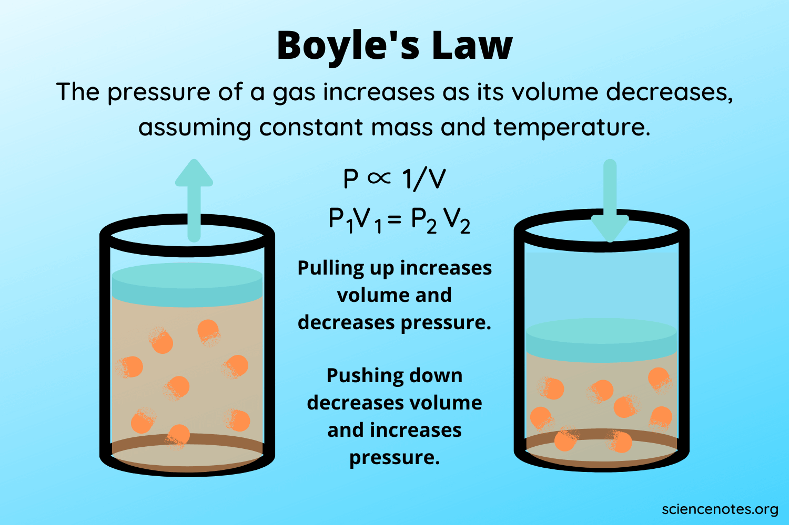

Example problems to Boyle's Law
First Example: 4.00 L of a gas are under a pressure of 6.00 atm What is the volume of the gas at 2.00 atm?
Formula:
(6.00 atm) (4.00 L) = (2.00 atm) (x)
Second Example: A container of oxygen has a volume of 30.0 mL and a pressure of 4.00 atm If the pressure of the oxygen gas is reduced to 2.00 atm and the temperature is kept constant, what is the new volume of the oxygen gas?
Formula:
(4.00 atm) (30.0 mL) = (2.00 atm) (x)
Last Example:A 40.0 L tank of ammonia has a pressure of 8.00 atm Calculate the volume of the ammonia if its pressure is changed to 12.0 atm while its temperature remains constant.
Formula:
(8.00 atm) (40.0 L ) = (12.0 atm) (x)
